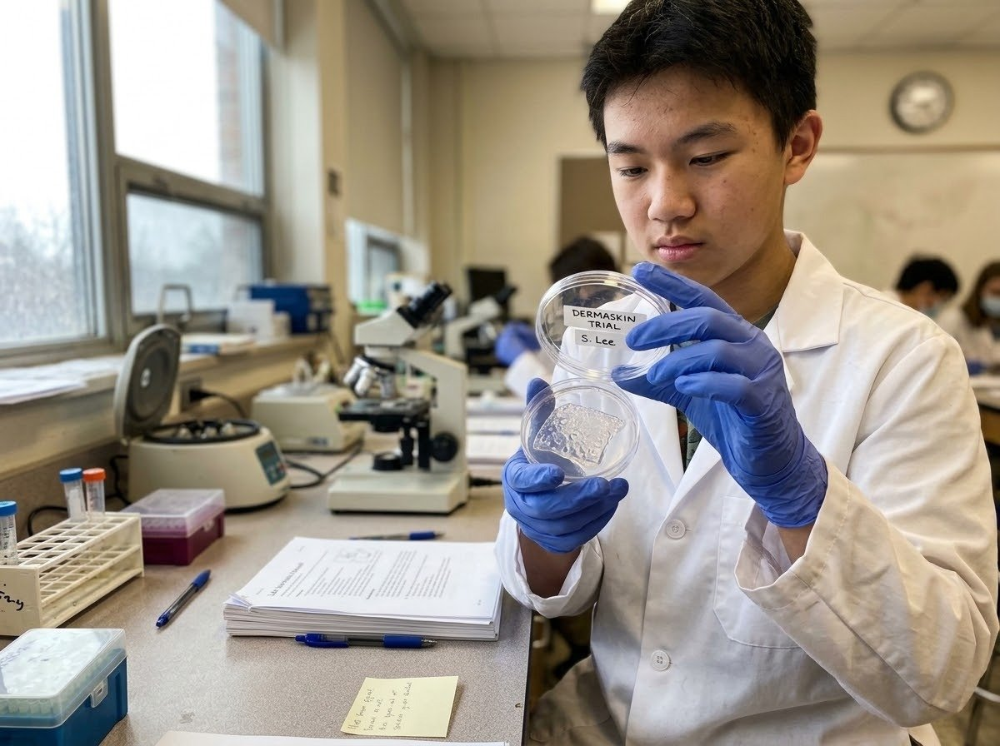

O problema que a DermaNova quer resolver, e a proposta por trás da DermaSkin.
Lesões profundas podem destruir várias camadas da pele. O organismo consegue fechar a ferida, mas o tecido formado costuma vir com cicatriz, menos elasticidade, perda de sensibilidade e ausência de estruturas como pelos e glândulas.
Revisões científicas destacam que a regeneração de pele adulta sem cicatriz é um dos maiores desafios da medicina regenerativa, e que biomateriais, fatores bioativos e terapias celulares vêm sendo combinados para resolvê-lo. É nesse espaço que a DermaNova entra — com a DermaSkin, pronta para chegar aos primeiros centros de tratamento.
| Nome da empresa | DermaNova |
|---|---|
| Problema | Regeneração incompleta e formação de cicatrizes após lesões profundas |
| Produto | DermaSkin, uma matriz regenerativa personalizada |
| Público beneficiado | Pacientes com queimaduras, acidentes, feridas crônicas e cirurgias extensas |
| Etapas auxiliares | Cultivo celular, produção de moléculas, controle de temperatura, análise de amostras e controle de qualidade |
| Preço | A partir de R$ 48.900 por aplicação (matriz personalizada, sob prescrição médica em centros parceiros) |
Uma estrutura formada por quatro componentes, pensada para sustentar as células enquanto o novo tecido se forma — e depois se degradar sozinha.
Base da matriz. Mantém o ambiente hidratado e permite a passagem de nutrientes.
Cultivadas em laboratório, organizadas no suporte para migrar e formar novas camadas.
Contribuem para a comunicação entre células durante a recuperação do tecido.
Estrutura porosa que dá suporte físico sem impedir a circulação de nutrientes.

A DermaSkin não seria responsável por "criar uma pele pronta". Sua função é oferecer uma estrutura que auxilie as células a ocupar e reorganizar a área lesionada — e depois desaparecer, de forma controlada, à medida que o tecido real toma seu lugar.
A DermaSkin não reconstrói perfeitamente estruturas como pelos e glândulas: seu papel é oferecer, de forma personalizada, uma matriz temporária associada a células e moléculas bioativas que auxilia a regeneração.
Por ser produzida sob medida para cada paciente — com cultivo celular próprio e controle de qualidade individualizado — a DermaSkin é hoje um tratamento de alto custo, o que também é discutido na página de Riscos.